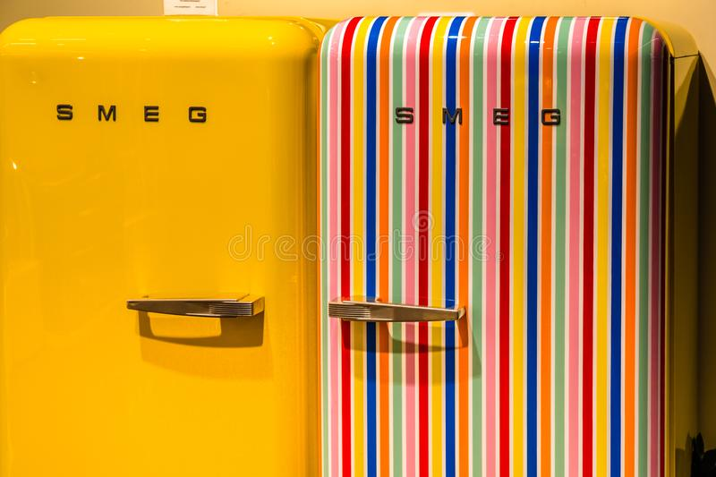

SMEG Fridge
Founded in 1948 by Vittorio Bertazzoni as an enameling and metalworking company, the Smeg company preserves the memory of the activity originally carried out in the acronym Smalterie Metallurgiche Emiliane Guastalla. During the 1950s the company’s metalworking background was accompanied by the production of its first cooking appliances. In 1956, the company presented “Elisabeth”, one of the first gas cookers equipped with automatic ignition, a safety valve in the oven and a cooking programmer.
R35 000
2 Available